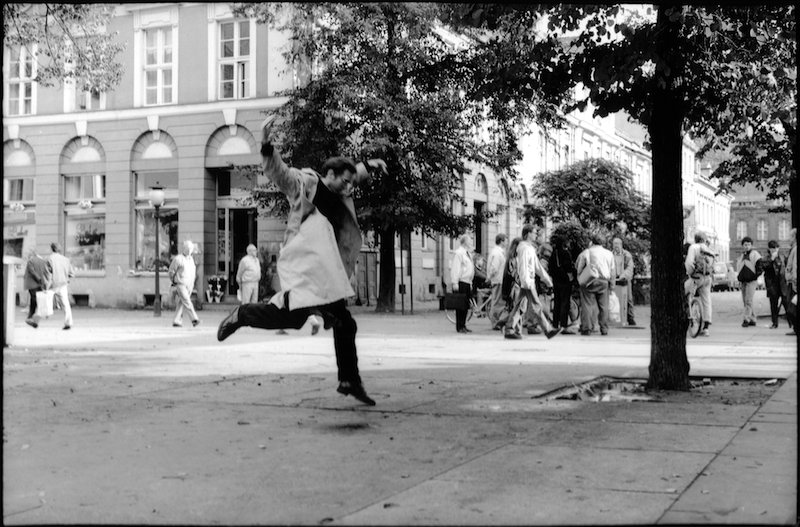
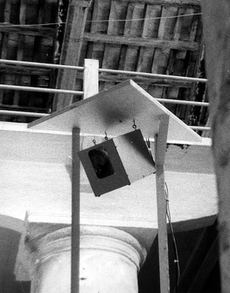

David Rokeby in Very Nervous System in the street in Potsdam in 1993
Very Nervous System is the third generation of interactive sound installations which I have created. In these systems, I use video cameras, image processors, computers, synthesizers and a sound system to create a space in which the movements of one's body create sound and/or music. It has been primarily presented as an installation in galleries but has also been installed in public outdoor spaces, and has been used in a number of performances.
I created the work for many reasons, but perhaps the most pervasive reason was a simple impulse towards contrariness. The computer as a medium is strongly biased. And so my impulse while using the computer was to work solidly against these biases. Because the computer is purely logical, the language of interaction should strive to be intuitive. Because the computer removes you from your body, the body should be strongly engaged. Because the computer's activity takes place on the tiny playing fields of integrated circuits, the encounter with the computer should take place in human-scaled physical space. Because the computer is objective and disinterested, the experience should be intimate.
David Rokeby interacting with Very Nervous System in 1991
The active ingredient of the work is its interface. The interface is unusual because it is invisible and very diffuse, occupying a large volume of space, whereas most interfaces are focussed and definite. Though diffuse, the interface is vital and strongly textured through time and space. The interface becomes a zone of experience, of multi-dimensional encounter. The language of encounter is initially unclear, but evolves as one explores and experiences.
The installation is a complex but quick feedback loop. The feedback is not simply 'negative' or 'positive', inhibitory or reinforcing; the loop is subject to constant transformation as the elements, human and computer, change in response to each other. The two interpenetrate, until the notion of control is lost and the relationship becomes encounter and involvement.
The diffuse, parallel nature of the interaction and the intensity of the interactive feedback loop can produce a state that is almost shamanistic. The self expands (and loses itself) to fill the installation environment, and by implication the world. After 15 minutes in the installation people often feel an afterimage of the experience, feeling directly involved in the random actions of the street.
The installation could be described as a sort of instrument that you play with your body but that implies a level of control which I am not particularly interested in. I am interested in creating a complex and resonant relationship between the interactor and the system. (Next )

one of 3 16 x 16 pixel hand-built cameras in Very Nervous System at the Venice Biennale in 1986
Leslie-Ann Coles interacting spontaneously with Very Nervous System in 1987
1987
communications event w/Robert DesRosiers,
Bell Canada Studios, Toronto / Ottawa.
1988
interactive performances and workshops
at the Banff Centre, Banff, Canada.
interactive dance performance in "Diffusion"
at the Music Gallery, Toronto, Canada.
Dunlop Gallery, Regina, Canada (under
the name Body Language)
"Siggraph '88 Art Show", Atlanta, USA.
"Féstival des Arts Eléctroniques",
Rennes, France.
National Museum of Science and Technology,
Ottawa, Canada.
1989
"Invitation to Interactive Art", Kawasaki-shi,
Japan.
"Computer Music Festival", Vrije Universiteit
Brussel, Brussels, Belgium.
"Art et Ordinateur", Galerie de L'UQAM,
Montréal, Canada.
"Beyond Electronics", Open/Access Gallery,
Winnipeg, Canada.
"Machinations" at Galerie Christiane Chassay,
Montréal, Canada.
1990
"Second International Symposium on Electronic
Art", Gröningen, Netherlands.
performance at "New Music America", Montréal,
Canada.
"European
Media Arts Festival", Osnabrück, West Germany.
Plug-In Gallery, Winnipeg, Canada.
"Kanagawa International Outdoor Art Festival",
Manazuru, Japan.
"Rencontres Internationales Art Film/Art
Video/Art Ordinateur", Paris, France.
1991
"Ars Electronica", Linz, Austria.
"MuuMediaFestival", Otso Gallery, Helsinki,
Finland.
"European Software Festival", Gasteig,
Munich, Germany.
1992
"IMZ Congress", the Power Plant Art Gallery,
Toronto, Canada.
"Glenn Gould Conference", CBC Broadcast
Centre, Toronto, Canada.
interactive sound environments for Ein
Sommernachtstraum, Munich, Germany.
"Canada Dance Festival", National Arts
Centre, Ottawa, Canada.
"Electronic Expressions.2", Megahan Gallery,
Allegheny College, Meadville, U.S.A.
1993
"Futuro Remoto", Mostra D'Oltremare, Naples,
Italy.
"Kunstliche Spiele", MedienLabor München,
Munich, Germany.
"Conference on Dance and Technology",
Simon Fraser University, Vancouver, Canada.
Potsdam 1000, Potsdam, Germany
Berliner Philharmonie Kammermusiksaal, Berlin, Germany
1994
"Berliner Dirigentenwerkstatt", Akademie
der Kunst, Berlin, Germany.
"TechnoArt",
Ontario Science Centre, Toronto, Canada.
"Corps et Machines", Deuxiéme Biennale
de Charleroi/Danses, Charleroi, Belgium.
1995
"In Light of Our Reflection", Tufts University
Art Gallery, Boston, U.S.A.
"Oltre il villagio globale", Triennale
di Milano, Milan, Italy.
"Net@Works",
Centro Nacional de las Artes, Mexico City, Mexico.
"Arte No Seculo XXI", Sao Paulo, Brasil.
1996
"The Presence of Touch", Gallery 2, School
of the Art Institute of Chicago
"New Persona / New Universe", Biennale
di Firenze, Florence, Italy.
Tempozan Contemporary Art Museum, Osaka,
Japan.
"Interactive", Salina Arts Center, Salina,
U.S.A.
"Schatze und Visionen", Graz, Austria.
1998
"Giver of Names",
MacDonald Stewart Art Centre, Guelph University, Guelph, Canada.
Klangturm
St. Poelten, St. Poelten, Austria.
1999
"Comunicacão/Comunicacoes", Porto,
Portugal.
Klangturm
St. Poelten, St. Poelten, Austria.
"Materiale / Immateriale", Centro Trevi,
Bolzano, Italy.
"Cartoombria", Rocca Paolina, Perugia,
Italy.
2000
Technopolis, Brussels, Belgium
2009
See This Sound, Lentos Museum, Linz, Austria
Copyright 2010 David Rokeby / very nervous systems / All rights reserved. 11/24/10